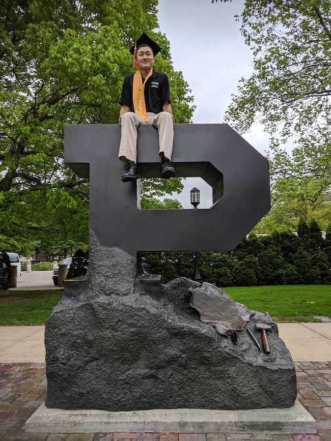
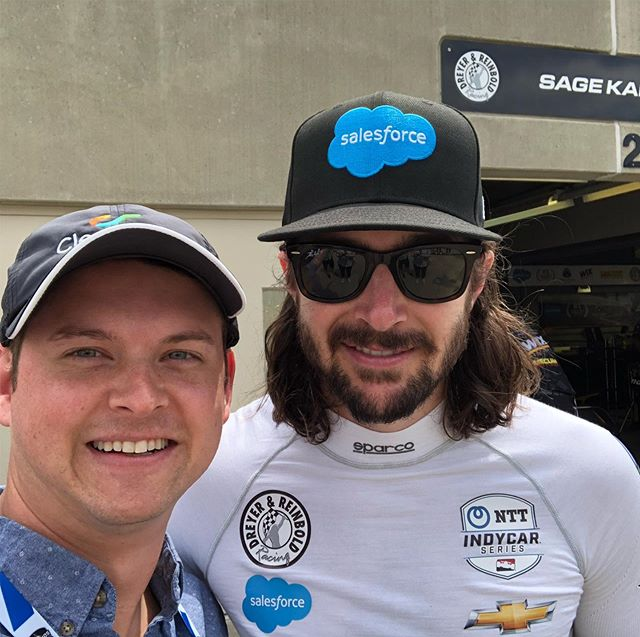

Indy Mechanical Keyboard Meetup
April 18, 2020 in Broadripple Indianapolis from 1:30 - 6PM
What
Whether you're brand new to this hobby, or you've been building your own boards for years, come join us to chat about (and gawk at) mechanical keyboards and all the accessories for an afternoon. We'll be in beautiful Broadripple, close to Hubbard and Cravens Coffee.
Where
Olio
6202 Carrollton Ave.
Indianapolis, IN 46220
Olio
Detailed, v professional parking map
{kind=link}
Schedule
- 1:30 - 2:30: Show & Tell
- 2:30 - 3:30 PM: Build demo (lubing, stabilizer modding, soldering)
- 4:30 - 5:30 PM: Giveaways
Who
We have wonderful sponsors. Check out this list!
About The Organizers
Eric Kong
My name is Eric Kong and I am one of the organizers for the 2020 meet up. I’m super excited to meet you all and chit chat about keyboards at the event. Here is a little bit about me:
Occupation: Agricultural engineering graduate student
Favorite keyboard: A white MagicForce 49 key with Gateron Reds. This was my first board and it has been my daily driver since. It isn’t valuable, rare, or high quality. But I like the layout and it has been a great tool.
How I got into the hobby: I met some online friends in 2016 while I was playing Overwatch. I was a complete PC gaming noob back then and they always talked about PC peripherals. They introduced me to mechanical keyboards and Massdrop. After that, my interest skyrocketed when I started looking at r/mk, getting involved with the Massdrop community, and talking to my friends about keyboards.
My favorite aspect of the hobby: I like that mechanical keyboards are an extension of my passion for engineering (designing and building). I get lots of satisfaction out of seeing something that I built or modified work.
Fun fact: The ‘R’ keycap on my board is missing because it fell down the garbage disposal when I was cleaning my keycaps. Then the disposal got turned on and it was destroyed. May that keycap rest in pieces.
Alex Lewis
My name is Alex Lewis and I can't wait to talk keyboards and clacking experiences with everyone at the event. Here is a little bit about me:
Occupation: Software engineer
Favorite keyboard: That's tough. I have a few that I rotate into use at least once a week, but my most favorite is probably a polycarbonate Salamander keyboard with Gateron Fei Matcha switches.
How I got into the hobby: Circa 2015, I had recently started at my first "engineering" job. I'd used an apple wireless keyboard for a few years but it just didn't feel substantial. There were some coworkers that had mechanical keyboards, mostly with Cherry blues or reds in them, but someone had Cherry clears and I was immediately interested in them. Later that night, I order a Vortex Pok3r and the rest involves falling deep into the rabbit hole.
My favorite aspect of the hobby: I began building keyboards (OLKB Planck) because I wasn't getting any sense of "completion" with the things that I was building at work. Building and customizing keyboards give me a sense of completion and I love tweaking a keyboard setup until I'm perfectly happy with it.
Fun fact: Hackerman is my favorite.